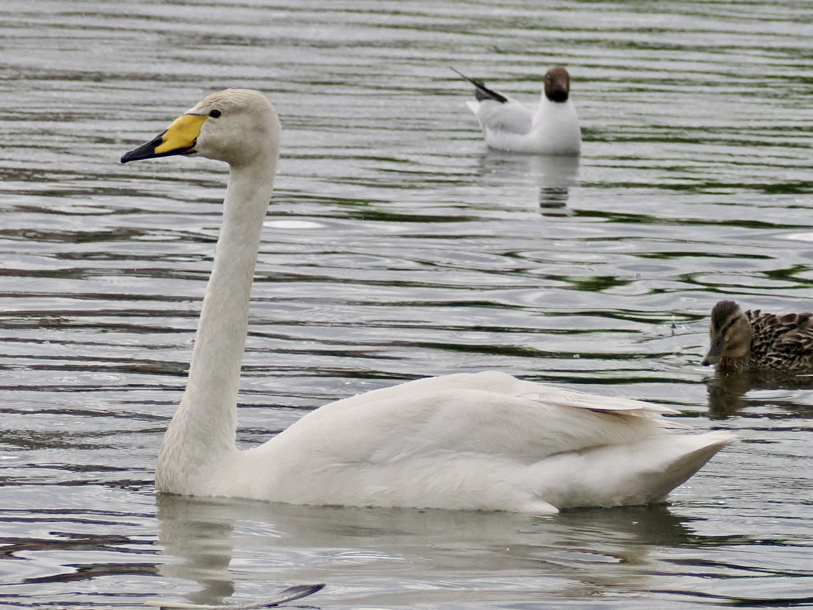

Whooper Swan
Cygnus cygnus
Order: Anseriformes
Family: Anatidae

A large white swan with a yellow and black bill. Unlike Mute Swan, neck looks very straight.
Order: Anseriformes
Family: Anatidae

A large white swan with a yellow and black bill. Unlike Mute Swan, neck looks very straight.